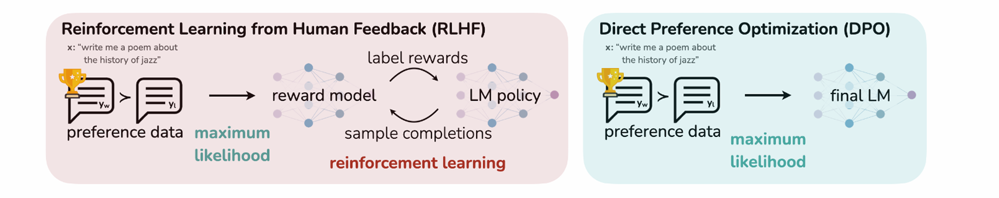

介绍后训练阶段的 Direct Preference Optimization
DPO（Direct Preference Optimization ）
RLHF 的 Pipeline 较复杂，计算成本较高，所以我们采用直接偏好优化（DPO）。把强化学习问题转化为监督学习问题，因为强化学习对算力的要求更高。（计算量大的原因：Reward Model；需要实时交互）
最优策略与奖励模型之间有一一映射的关系。
LDPO(πθ;πref)=−E(x,yw,yl)∼D[logσ(βlogπref(yw∣x)πθ(yw∣x)−βlogπref(yl∣x)πθ(yl∣x))] 直接偏好优化（DPO）直接针对具有简单分类目标的策略进行优化，它不依赖于 reward model，而是从“哪一个回答更好”的偏好对比数据出发，拟合一个隐式奖励模型，直接更新策略模型。
推导闭式解
我们简化 RLHF 的优化目标：

定义 partition function：Z(x)=∑yπref(y∣x)exp(β1r(x,y))，只与 x 和 πref有关：
πθminEx∼D,y∼πθ(y∣x)[logZ(x)1πref(y∣x)⋅exp(β1rϕ(x,y))πθ(y∣x)−logZ(x)] 写成 KL 散度的形式：
πθminEx∼D[DKL(π(y∣x)∥Z(x)πref(y∣x)⋅exp(β1rϕ(x,y))]−const(x) 由 KL 散度的定义，得到: 最优策略的闭式解
π∗(y∣x)=Z(x)1πref(y∣x)exp(β1r(x,y)) 我们可以推导出闭式解，由于配分函数 Z(x) 与 y 无关，原始优化目标可重组为：
πminEx∼D[DKL(π(y∣x)∥π∗(y∣x))−logZ(x)] - 因此最优策略为：π(y∣x)=π∗(y∣x)=Z(x)1πref(y∣x)exp(β1r(x,y))
最优策略是参考策略与奖励指数的玻尔兹曼分布，通过β调节对高奖励响应的偏向程度。
通过在两边取对数：
r(x,y)=βlogπref(y∣x)π∗(y∣x)+βlogZ(x) 将这个 reward 函数带入 Bradley-Terry preference Model 得到：σ 是 sigmoid 函数
p∗(y1≻y2∣x)=σ(βlogπref(y1∣x)π∗(y1∣x)−βlogπref(y2∣x)π∗(y2∣x)) 综上 DPO 的目标为：(也可以理解为直接将 Loss 带入RLHF 的 Loss function)
LDPO(πθ;πref)=−E(x,yw,yl)∼D[logσ(βlogπref(yw∣x)πθ(yw∣x)−βlogπref(yl∣x)πθ(yl∣x))] DPO Update
对 Loss 根据参数 θ 求梯度得到：
∇θLDPO(πθ;πref)=−βE(x,yw,yl)∼D[σ(r^θ(x,yl)−r^θ(x,yw))(∇θlogπ(yw∣x)−∇θlogπ(yl∣x))] 希望增大 yw 的似然，减小 yl，而使用的权重是“隐式的 reward 到底错了多少”。β 在这里实际上是 Learning rate。在实践中通常需要一个 ground truth reward function （分类器）来得到 yw 和 yl
对一般的 f-divergence

实验对比

实验结果：每一个点为模型的检查点。

DPO 失败的情况


Improvements
1️⃣Token-level DPO（词级直接偏好优化）
传统 DPO 是 对整个回答进行打分（sentence-level），reward 非常稀疏。而 Token-level DPO 是：
逐 token 比较人类偏好和非偏好回答的概率，然后聚合起来。
也就是说：对每一个 token 的生成概率进行比较，而不是只看整个句子的 log-prob；更细粒度地反映了模型在生成过程中每一步的偏好程度。
优势：提供了更细致的监督信号；在文本长度较长时，能更稳定地优化；对长回答中细微的语言差异更敏感。
缺点：计算复杂度更高；某些情况下 token 级别的比较可能会模糊整体语义偏好。
细节：这里不直接使用 reward，而是使用 Advantage。由于 Advantage 中使用了 sequential，KL 也需要使用 sequential。
2️⃣ KTO
前景理论：人对风险的厌恶，人对损失的厌恶。

HALOs
Human-Aware Losses (HALOs) 提供了一种理论框架：
它通过一个“间接奖励”信号 + 参考模型 + 人类价值函数 构造出一种能够隐式引导模型向人类偏好对齐的损失形式。
提出新的 reward function 形式：

这里不单独考虑 rθ(x,y)，考虑与其他可能的输出 y′∼Q 相比的相对奖励。

利用这个公式可以还原出 DPO 和 PPO
同时也可以得到 KTO：

可以可视化图片在前景理论中解释：不同的偏好优化函数对应不同的风险偏好或损失偏好。

对于非常不平衡的数据（正样本和负样本非常多），KTO 比 DPO 好许多。
3️⃣ Ψ PO：目标为统一各种偏好优化
考虑一个一般的单调非减函数 Ψ : [0,1] → ℝ，一个参考策略 π_ref ∈ Δ𝒴，以及一个正的正则化参数 β
πmax Ex∼ρ Eyw∼π(⋅∣x),yl∼μ(⋅∣x)[Ψ(p∗(yw≻yl∣x))]−βDKL(π∥πref) 其中 p∗ 表示真实的人类偏好。
该目标在：
KL 正则项鼓励策略 π 接近参考策略 πref。ΨPO 的目的是为了更好的数学推导。
希望当模型对输出更加 certain是降低 KL 项的约束。
4️⃣ IPO
令 g(y)=∑y’Φ(p(y≻y’))，令 h∗(yw,yl)=log(π∗(yl)πref(yw)π∗(yw)πref(yl))。
由于最优策略为 π∗(y)∝πrefexp(β−1g(y))
我们有方程：
π∗(yl)π∗(yw)=πref(yl)πref(yw)exp(β−1(g(yw)−g(yl))) 带入化简 h∗(yw,yl)=β−1(g(yw)−g(yl))
如果 Ψ是一个恒通映射，经过一系列推导后得到，loss 为：

定义 I(yw,yl) 当 yw 被偏好时为 1，否则为0.——Population IPO loss

进一步简化：

Limitation of the Direct Alignment Algorithm
Chosen Implicit Rewards Decrease
理想情况下，DPO 应该增加选择答案的隐性奖励，同时减少拒绝答案的隐性奖励。然而，在实践中，选择和拒绝答案的隐性奖励都会下降，尽管它们之间的差距有所扩大。

原因分析：在公式中，我们希望提高 x1，降低 x2

求导后作比值：

发现DPO实际上优先降低 reject response的概率，而不是优先向 prefer response 对齐。
此外可以通过设置 loss 来惩罚重复：（NLL）

一种解决方案：惩罚模型，如果模型对好的答案的提升不如预期（DPOP： DPO-Positive）

诱导模型增大 πθ(yw) 与 πref(yw) 的差距。
Length Bias
倾向于生成一些比较长的答案
Length Normalized DPO

Regularized DPO

Overgeneralization
有时候模型会过分“学习”人类的反馈，导致影响正常的效果，如希望模型在写信时不要使用“综上所述”，结果模型在论文中也不会输出综上所述。
解决：C3PO，加入上下文的理解。
基于约束偏好优化的情境化批评方法（C3PO）利用高层反馈生成合成偏好数据集，明确标注反馈的适用情境及具体作用范围。该方法随后在保持模型原始行为（与反馈无关的情境下）的约束条件下，基于该数据集对模型进行微调。

设计 loss：

DPO 修正 ranking 会比较差
原因分析：

所以需要回到 RL。
Update Reference Policy
使用 Online 的DPO，在训练的一定时间段更改和替换 πref 模型。可以使用参数空间的插值，每次对 reference model 做小的更新。

CPO（SimPO 的变种）
可以不必要使用 reference Policy
原本的 DPO loss：
LDPO(πθ;πref)=−E(x,yw,yl)∼D[logσ(βlogπref(yw∣x)πθ(yw∣x)−βlogπref(yl∣x)πθ(yl∣x))] CPO 的损失函数为：其中 U 是均匀策略，σ 为 sigmoid 函数。均匀策略 U：替代传统参考策略（reference policy），简化计算。
L(πθ;U)=−E(x,yw,yl)∼D[logσ(βlogπθ(yw∣x)−βlogπθ(yl∣x))], 引入熵，正则化 RL 目标：鼓励策略保持多样性，避免坍缩到单一模式。
pθmaxEx∼D,y∼pθ(y∣x)[r(x,y)]+βH[pθ(y∣x)], 
Online DPO
结合：
- negative Gradient：直接降低被拒响应yl 的概率。

此外，也可以使用迭代的策略，t 时刻的 θ 做为 t+1 时刻的 ref，即假设每次更新一定会更好。
Meta-Rewarding
使用大模型自身 judge 生成

总结：
有趣的是，当我们审视在线对齐算法（online alignment algorithms）的流程与演进时，会发现它们与PPO等在线强化学习（RL）算法的相似性日益增强。两者的共同点包括：
- 在线采样过程：通过当前模型生成样本并评估——
- 在线DPO（Online DPO）使用奖励模型（reward model）评估样本；
- PPO则依赖评论家模型（critic model）。
- 评估驱动训练：评估结果进一步指导模型优化。
核心差异在于：在线对齐算法采用基于对比学习的损失函数，结合在线采样后，被证明能有效提升对齐任务的性能。
{kind=link}